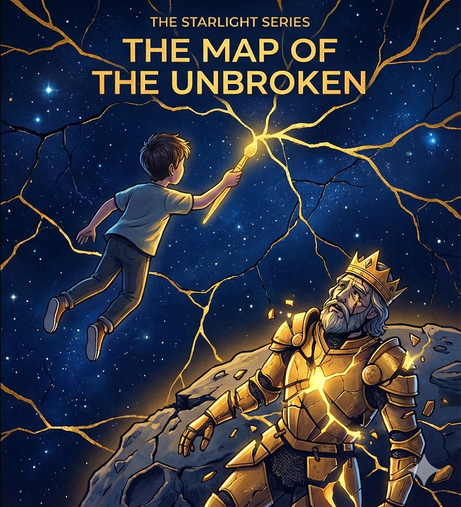

The sky didn't just break. It shattered.
It happened on a Tuesday, just like the Static, because Tuesday seems to be the day the universe decides to change its mind.
One moment, the Celestial Sphere was perfect—a smooth, dark blue dome where the stars moved in orderly, predictable lines. The Mapmakers, who lived in the Glass Tower, loved the sphere. They had charted every inch of it. They knew exactly where the sun would be at noon and where the moon would be at midnight.
Then came the Shake.
It started deep underground, a rumble that felt like the planet was shivering. Then, with a sound like a cracking glacier, a spiderweb of fractures shot across the sky.
CRACK. CRACK. CRACK.
Great shards of the night sky fell like black glass rain. The constellations were torn apart. Orion lost his belt. The Big Dipper spilled its contents. The North Star (which had only just started shining again) was knocked sideways.
When the dust settled, the sky was ruined. It was a jagged mess of sharp edges and empty holes.
In the Glass Tower, the Mapmakers were in a panic.
"It's broken!" cried the Chief Cartographer. "The grid is gone! We can't navigate! We don't know where we are!"
They ran around with glue and tape, trying to stick the pieces back together. They tried to force the stars back into their old positions. They tried to pretend the cracks weren't there.
"If we just paint over the lines," one Mapmaker said, holding a bucket of blue paint, "maybe nobody will notice."
But Kaito noticed.
Kaito was the youngest apprentice in the tower. He wasn't very good at drawing straight lines, which annoyed the Chief Cartographer. Kaito liked curves. He liked accidents.
He picked up a shard of the sky that had fallen into the garden. It was sharp and dangerous. But where it had broken, the edge wasn't black. It was glowing with a faint, warm light.
"It's not ruined," Kaito whispered. "It's open."
He looked up at the fractured dome. The Mapmakers were crying because their perfect map was gone. They thought the cracks were failures.
Kaito ran to his workshop. He didn't grab the blue paint to hide the damage. He grabbed a pot of gold resin—the kind used to fix precious bowls. He grabbed his widest brush.
He climbed out the window and onto the roof of the tower.
"What are you doing?" the Chief Cartographer shouted. "Come down! You can't fix it! It's destroyed!"
"I'm not fixing it!" Kaito shouted back. "I'm highlighting it!"
He dipped his brush into the gold. He reached up to the lowest crack in the sky.
He didn't try to hide the break. He filled it.
He painted a thick, shining line of gold right through the jagged tear. The resin seeped into the wound and hardened, glowing brighter than any star.
Kaito stepped back. The crack wasn't an ugly scar anymore. It was a vein of light. It looked like lightning caught in amber.
"One down," Kaito grinned. "A million to go."
He wasn't just repairing the sky. He was drawing a new map. A map that didn't pretend the bad things never happened. A map that showed exactly where the world had broken, and exactly how strong it was where it had healed.
♫ "I'll Follow You Into The Dark" - Death Cab For Cutie
♫ "The Chain" - Fleetwood Mac
♫ "Something In The Way" - Nirvana